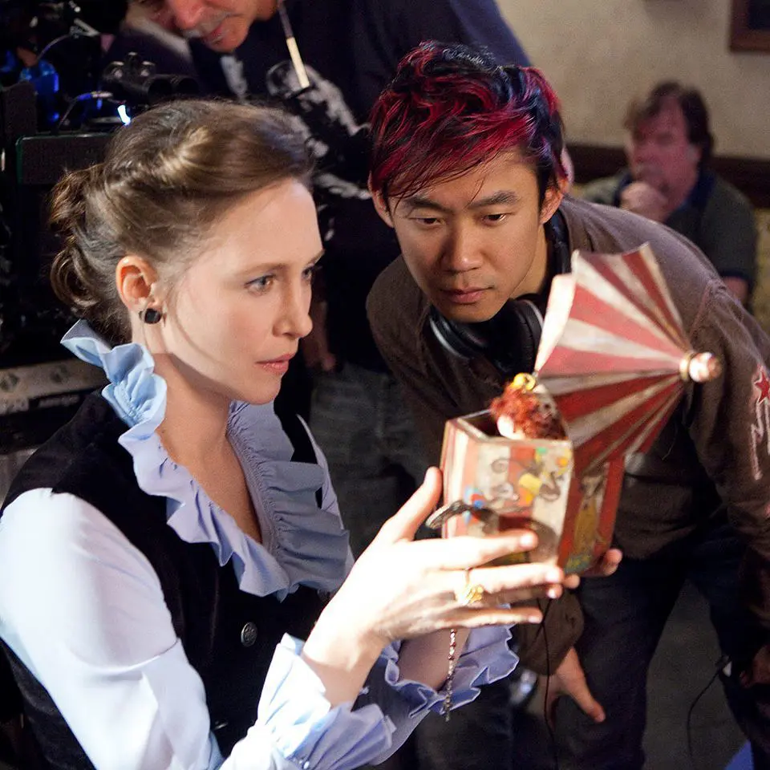
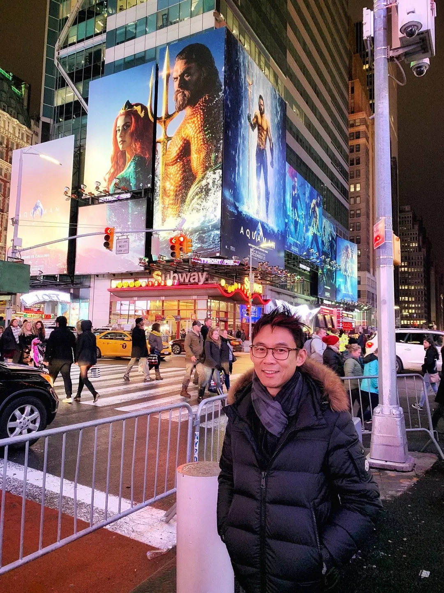
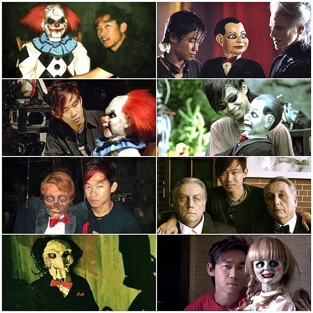

A Chinese director born in Malaysia and raised in Australia. In his early years at university in Melbourne, he majored in Chinese ethnic division. The knowledge of oriental exotic culture also has a great influence on James Wing's directing style, and the more important factor in his unique taste for plasma films such as "Saw" and "Dead Silence" is his Shocked by the death of his father at the age of 14.
Speaking of Wan, we have to mention his golden partner Ray Warner. Geniuses are not created overnight. As early as in college, the two had ambitions to write a horror movie that could be branded with the times. Like most old horror movie fans, the Texas Chainsaw Massacre, The Silence of the Lambs and other classic horrors The film gave them a lot of inspiration. Finally, in 2004, Wan Werner co-wrote the original script of Chainsaw. After the two of them managed to prepare the funds, they shot a small film with a rough picture, which was then submitted to Lion. Door Films, Lionsgate decided to adopt it immediately after seeing it, and James Wan served as the director himself. At this point, Chainsaw - a horror film series with influence of the times was born. Although Wan secluded himself and worked behind the scenes after 3 episodes, he still could not hide his reputation as the "Father of Chainsaw".
 